A. GAMBARAN UMUM KEGIATAN BAZAR KEWIRAUSAHAAN
1. Kelompok Kami
Nama kelompok kami adalah “Nirmala”. Kata ini berasal dari Bahasa Sansekerta yang memiliki arti murni, suci, dan tanpa cela. Melalui makna ini, kami berharap bahwa kehadiran toko kami mampu membawa kebahagiaan bagi orang-orang di sekitar kami, terutama melalui produk-produk yang kami jual dalam bazar. Kelompok kami terdiri dari 4 anggota, yaitu Joslin/20, Marcha/26, Nadine/28, dan Stefi/33. Kami pun sepakat bahwa kelompok kami akan diketuai oleh Stefi. Sejak awal diskusi, kami sudah membagi tugas sehingga seluruh anggota kelompok kami memiliki tanggung jawab di bagiannya masing-masing. Dalam perencanaan produk, seluruh anggota kami memang terlibat dalam proses diskusi dan penentuan produknya hingga kami mampu memperoleh kesepakatan akhir produk yang akan dijual. Namun, dalam hal penentuan harga dan keuntungan setiap produk, mayoritas berasal dari Stefi dan Marcha. Begitupula dengan pembuatan iklan toko kami. Seluruh anggota turut berpartisi dalam pemberian ide terkait dengan desain poster dan iklan. Namun, dari hasil pembagian tugas kami, Marcha dan Joslin-lah yang memiliki tugas utama dalam bidang ini.
Sedangkan, dalam pembuatan form penjualan secara online, merupakan tanggung jawab utama Nadine dan dibantu oleh Stefi dalam proses pembuatannya. Proses pembelian produk-produk yang akan dijual dalam bazar merupakan tanggung jawab utama dari Joslin dan Stefi. Selain menjual barang, kelompok kami juga menjual beberapa hidangan yang dapat dikonsumsi, seperti ayam saus keju, yoghurt bar, dan butterfly pea (teh bunga telang). Untuk keju dan yoghurt (proses bioteknologi) yang kami gunakan dalam proses pembuatan hidangan tersebut, kami buat sendiri sendiri secara bersama. Begitupun dengan hidangan ayam saus keju yang kami buat secara bersama di dapur sekolah. Sedangkan, untuk proses mengolah yoghurt hasil bioteknologi menjadi 18 porsi yoghurt bar, merupakan tanggung jawab Stefi. Begitupun dengan butterfly pea yang menjadi tanggung jawab utama Nadine dalam proses pembuatannya. Berkaitan dengan hari-H pelaksanaan bazar, kelompok kami sepakat untuk mengenakan pakaian yang bernuansa sama, yaitu pakaian berwarna merah muda dan ungu. Di mana, warna-warna tersebut merupakan warna yang sangat identik dengan kelompok kami, karena menjadi warna penyusun utama dari logo kelompok kami, “Nirmala”.
2. Stan
Stan bazar kami berlokasikan di posisi depan, sisi kiri Aula SMP Santa Ursula Jakarta. Ketika memasuki Aula SMP Santa Ursula Jakarta, maka para pembeli dapat berjalan lurus, lalu ke sisi kiri aula, di situlah stan Nirmala berada dan sudah siap melayani para pembeli. Kami mendapatkan area berjualan persis di depan sebuah papan hitam, sehingga kami berkesempatan untuk mendekorasi papan tersebut. Stan bazar kami hias sesuai dengan tema “Nirmala”, yaitu bernuansa merah muda, ungu, dan biru. Oleh sebab itu, kami menghias stan bazar kami dengan balon-balon huruf yang kami susun sehingga membentuk kata “Nirmala”. Di samping balon huruf, kami memberi hiasan berupa ornamen kupu-kupu dan balon berwarna biru di sekitarnya. Selain itu, bagian papan hitam juga kami gunakan untuk menempel rekening dan QR Code Shopee Pay. Pada bagian meja, kami melapisinya dengan kain berwarna emas dan dihiasi lampu warna-warni seperti warna natal yang mampu menarik perhatian. Selain itu, kami menggunakan dekorasi sekaligus papan informasi yaitu blackboard yang kami hiasi dengan kapur berbagai warna berisikan produk-produk yang kami jual. Dekorasi ini mampu menarik minat pelanggan sekaligus memberikan informasi ketersediaan barang yang kami jual. Pada bagian meja, kami menata produk-produk yang akan kami jual, ada tempat kami meletakkan minuman dan makanan-makanan kami. Kemudian ada pula tempat meletakkan gelang, stiker, contoh paket, dan ada juga display untuk baju.
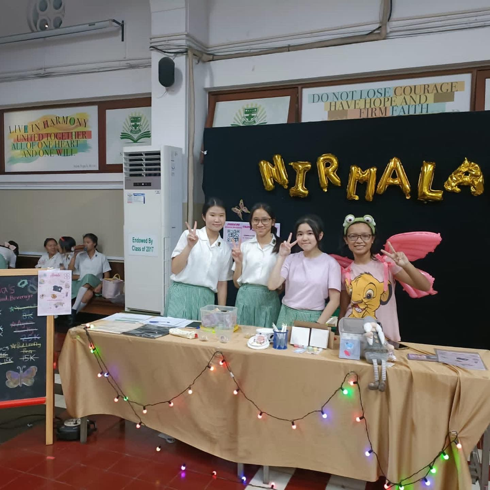
3. Pembeli
Kami menjual produk-produk yang ada secara online dan offline dalam bazar. Karena bazar diadakan secara tertutup di sekolah, oleh sebab itu para pembelinya secara utama adalah para siswi SMP kelas 7, 8, dan 9, para guru SMP Santa Ursula Jakarta, beberapa pelajar SD, dan siswi SMA Santa Ursula Jakarta. Selain itu, pihak sekolah juga mengundang para orang tua murid kelas 91 untuk hadir memeriahkan bazar kelas kami pada hari tersebut. Sedangkan, mayoritas yang membeli produk kami secara online melalui pengisian pada google form adalah para kerabat, keluarga besar, dan teman yang berasal dari sekolah lain.
B. WAKTU DAN TEMPAT PELAKSANAAN
- Hari/Tanggal : Kamis, 7 Desember 2023
- Tempat : Aula SMP Santa Ursula Jakarta
- Waktu : 09.00 WIB - 11.35 WIB
C. PRODUK YANG DIPASARKAN
- Pulpen Awan
- Scrunchie dengan 4 variasi warna (merah muda, biru, kuning, dan putih)
- Sticky Notes dengan 4 jenis variasi (Sticky Notes Yolk Summer Pink, Sticky Notes Yolk Summer Blue, Sticky Notes Yolk Yellow, dan Sticky Notes Yolk Lemon)
- Oversized T-Shirt dengan 2 pilihan warna (cream dan hitam). Tersedia dengan ukuran M, L, dan XL
- Kotak pensil berbahan kain dan bermotif bunga
- Gelang manik bertemakan Toy Story
- Stiker dengan 4 pilihan karakter (Kirby, Minions, Toy Story, dan Kuromi)
- Paket Nebula (paket melukis yang terdiri dari 2 kanvas, 6 pilihan cat warna cup, sebuah kuas, dan dua buah gelang manik)
- Paket Asmaraloka (paket menghias photocard yang terdiri dari sebuah photocard holder dan 2 lembar stiker untuk mendekorasi)
- Yoghurt Bar (produk buatan sendiri)
- Ayam Saus Keju (produk buatan sendiri)
- Butterfly Pea (produk buatan sendiri)
Read More!!


 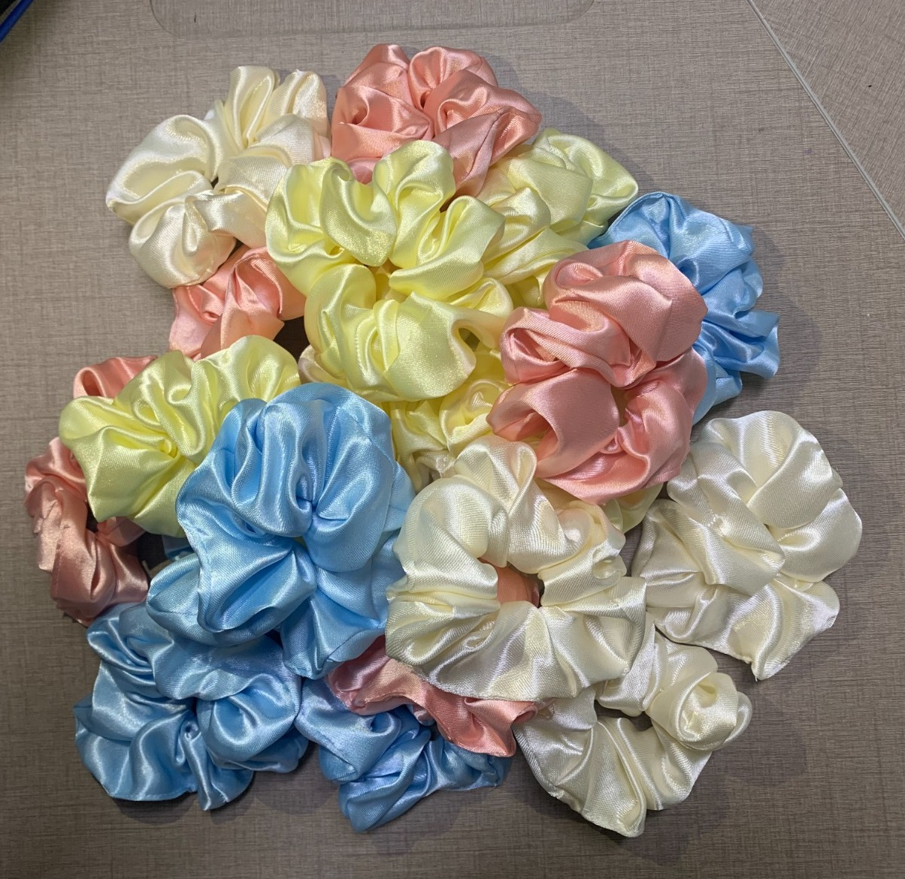
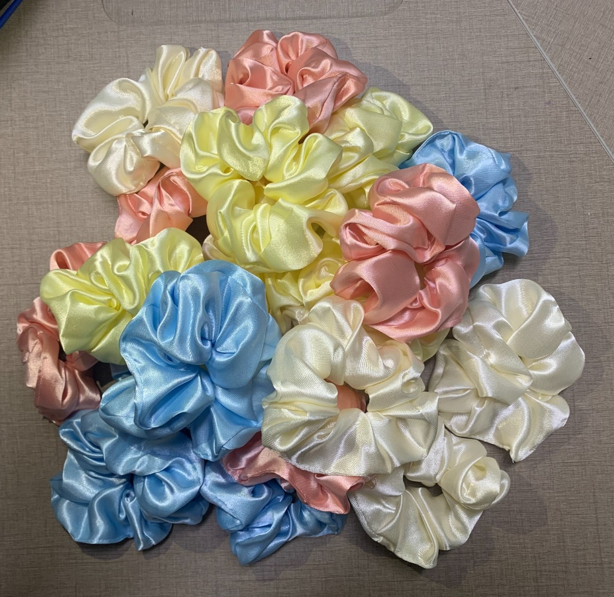
 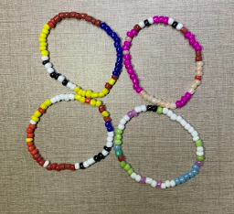
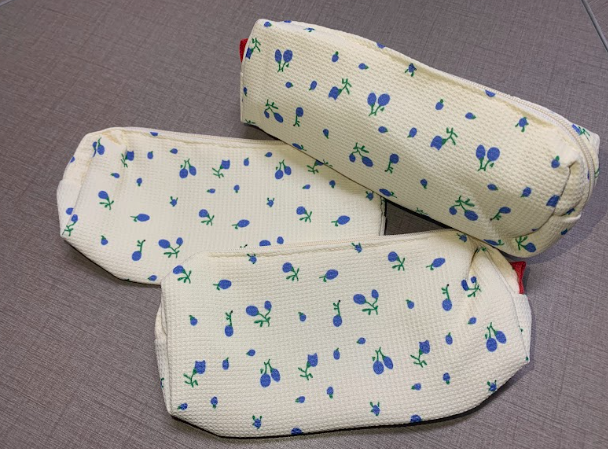
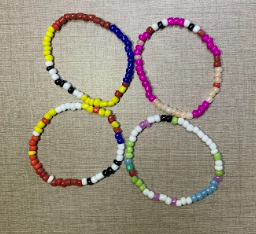
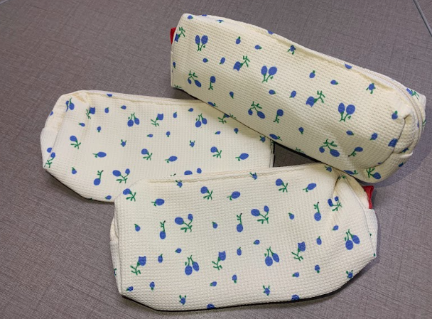


 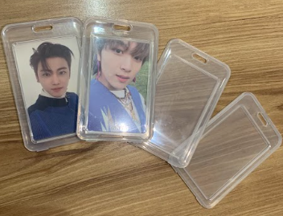
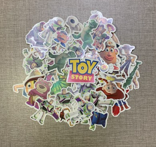
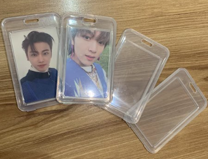
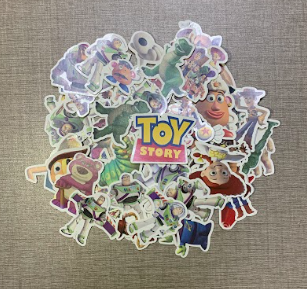